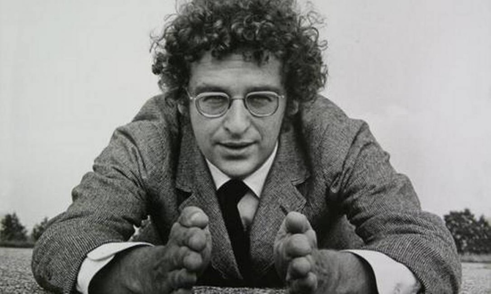

Arte Comtemporânea
História
Nesse panorama, a arte oferece experiências inovadoras pautadas principalmente nos processos artísticos, em detrimento do objeto, ou seja, na ideia em detrimento da imagem. A Arte Contemporânea ou Arte Pós-Moderna é uma tendência artística que surgiu na segunda metade do século XX. Sua origem costuma ser relacionada à década de 60 e ao movimento pop art. A Arte Contemporânea se prolonga até aos dias atuais, período esse denominado de pós-modernismo, propondo expressões artísticas originais a partir de técnicas inovadoras. Nesse sentido, a arte contemporânea prioriza a ideia, o conceito, a atitude, acima do objeto artístico final. O objetivo aqui é produzir arte, ao mesmo tempo que reflete sobre ela. Foi dessa maneira que a Arte Contemporânea rompeu com alguns aspectos da Arte Moderna. Ela abandonou diversos paradigmas e trouxe valores para a constituição de uma nova mentalidade. Ao mesmo tempo ela abriu espaço para diversidade de estilos, perspectivas, técnicas e abrangência de linguagens artísticas (dança, música, moda, fotografia, pintura, teatro, escultura, literatura, performances, happenings, instalações, videoarte, etc.). Elas buscaram romper com a Arte Moderna para dar lugar à arte contemporânea, relacionada com a comunicação:
- Pop Art-Pop Art é um movimento artístico que se caracteriza pela reprodução de temas relacionados ao consumo, publicidade e estilo de vida americano (american way of life).Para saber mais sobre esse movimento, clique aqui.
Andy warhol(1928-1987)-Díptico Marilyn Monroe(1962)

- Minimalismo-A expressão “Minimalismo” (do inglês, “Minimal Art”) faz referência aos movimentos estéticos, científicos e culturais. Para saber mais sobre esse movimento, clique aqui.
Philippe Starck(1949)-Salif Juicer (1990)


- Arte Conceitual-
A Arte Conceitual é uma vanguarda artística moderna e contemporânea.Trata-se de uma expressão artística mais pautada nos conceitos, reflexões e ideias, em detrimento da própria estética (aparência) da arte. Para saber mais sobre esse movimento, clique aqui.
Grupo Fluxus-Ceiling Painting, de Yoko Ono (1966)


- Arte Povera-O movimento povera se destacou na pintura, escultura, instalação e performance. Sua ideia era, de fato, propor uma nova reflexão estética sobre o produto artístico ao “empobrecer a arte” e trazer à tona sua efemeridade através da utilização de materiais simples e naturais.Para saber mais sobre esse movimento, clique aqui.
Mario Merzs(1925)"Iglu"(1962)


- Hiper-realismo-O hiper-realismo é um movimento artístico que tem como objetivo retratar a realidade de forma extremamente fiel e precisa. O termo “hiper-realismo” foi criado nos anos 1970 para descrever uma tendência que surgiu como uma reação à arte abstrata e conceitual, que predominava na época.Para saber mais sobre esse movimento, clique aqui.
Richard Estes (1932-2003)-Diner (1971)


- Land Art-O termo “land art”, se traduzido, corresponde a “arte da terra” e tem como característica a possibilidade da utilização de recursos da própria natureza para a criação da obra de arte.Para saber mais sobre esse movimento,clique aqui.
Walter de Maria(1935-2013)-O Campo dos Raios(1977)

-
Street Art-A Arte Urbana (street art, em inglês) é um tipo de arte encontrada nos espaços urbanos. Manifesta-se por meio de intervenções, performances, grafite, teatro, dentre outras.Para saber mais sobre esse movimento, clique aqui.
Jorge Selaron (1947-2013)-Escadaria Selaron(2013)

- Body Art-Sua principal caraterística é o uso do corpo como suporte e intervenção para a realização do trabalho artístico. Dessa maneira, o corpo humano (seja do artista ou de um modelo) passa a ser a “tela” (daí aproximação com a “body paint”, ou pintura corporal), bem como o comunicador de ideias, ou seja, o mais importante veículo em que o artista vai explorar sua "obra viva".Para saber mais sobre esse movimento, clique aqui.
Yves Klein(1928-1962)-Antropometria(1960)

- Performance na Arte-A performance é uma modalidade artística híbrida, isto é, que pode mesclar diversas linguagens como teatro, música e artes visuais.
Está relacionada também ao happening e, muitas vezes, os termos são descritos como sendo a mesma coisa. Para saber mais sobre esse movimento, clique aqui.
Marina Abramovic (1946)-Exposição e performance Flow/Flux(2020)

- instalação artística-Na arte, chamamos de instalação um tipo de obra que utiliza o espaço como elemento fundamental. É uma linguagem relacionada à arte contemporânea e, na maior parte das vezes é montada em espaços de arte, como museus e galerias. Entretanto, pode também ser realizada ao ar livre. Para saber mais sobre esse movimento, clique aqui.
Hélio Oiticica (1937-1980)-Tropicália(1967)